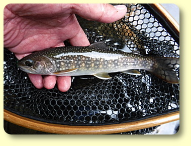

Introduction
Hi! How do you do?
My name is Takeshi "GO" Ito.
Thank you for visiting my web site "Fish & Tips". I am very glad to see you. I am a keen fisherman lives in Toyohashi city, Japan. I like fly fishing and spin fishing for trout.
I present this website to
introduce Japanese Fly Fishing and the beauty of Japanese Trout.
introduce Japanese traditional eel fishing.
Contents of Fish & Tips
Photo Gallery
Let me show some pictures from my fishing album.
I am going to write the following contents. But writing English article is a hard thing to me. So Please wait for a while.
Trout Fishing in Japanese mountain stream
I will introduce about trout fishing in Japanese mountain stream near my town.
Fly Fishing
About fly fishing for trout at Japanese mountain stream.
Lure Fishing
About lure fishing for trout at Japanese mountain stream.
"Tenkara" Fishing
I will introduce about "Tenkara" Fishing in Japan. It is a traditional style fly fishing in Japanese mountainous district.
Making furled tapered Tenkara lines
In the article, I would like to introduce my current production method of furled taperd line for Tenkara fishing. This is a combination of the traditional method of using horse tail hair to make a "basu", i.e. furled tapered line, and the method of connecting two sections of the bladed line, as described on pages 69-74 of the book "Tenkara tsuri no tanoshimi kata : How to enjoy Tenkara fishing - Introduction to Tenkara fishing for Yamame and Iwana" by Mr Hirotoki Kuwahara, which was my reference book when I started Tenkara fishing in 1982.
Tips
I collected some tips about Fly and Lure fishing for Japanese mountain stream. Let me talk about them.
Eel Fishing in Japan
My father is a "master" of eel fishing. I will introduce about eel fishing in Japan. It is a funny style fishing. I think you will be interested in this fishing method.
I will answer any questions about this website.
So please let me know your question by e-mail.
 e-mail : takeshi_go_ito●yahoo.co.jp
e-mail : takeshi_go_ito●yahoo.co.jp
Note: Change the ● to @ , please.
I am waiting an e-mail from you.
Then please enjoy the Fish & Tips !
Search in the Fish & Tips ↓